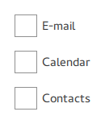

Pane QML Type
Provides a background matching with the application style and theme. More...
| Import Statement: | import QtQuick.Controls |
| Inherits: | |
| Inherited By: | Frame, Page, ScrollView, and ToolBar |
Properties
- contentChildren : list<Item>
- contentData : list<QtObject>
- contentHeight : real
- contentWidth : real
Detailed Description
Pane provides a background color that matches with the application style and theme. Pane does not provide a layout of its own, but requires you to position its contents, for instance by creating a RowLayout or a ColumnLayout.
Items declared as children of a Pane are automatically parented to the Pane's contentItem. Items created dynamically need to be explicitly parented to the contentItem.
As mentioned in Event Handling, Pane does not let click and touch events through to items beneath it. If wheelEnabled is true, the same applies to mouse wheel events.
Content Sizing
If only a single item is used within a Pane, it will resize to fit the implicit size of its contained item. This makes it particularly suitable for use together with layouts.

Pane { ColumnLayout { anchors.fill: parent CheckBox { text: qsTr("E-mail") } CheckBox { text: qsTr("Calendar") } CheckBox { text: qsTr("Contacts") } } }
Sometimes there might be two items within the pane:
Pane { SwipeView { // ... } PageIndicator { anchors.horizontalCenter: parent.horizontalCenter anchors.bottom: parent.bottom } }
In this case, Pane cannot calculate a sensible implicit size. Since we're anchoring the PageIndicator over the SwipeView, we can simply set the content size to the view's implicit size:
Pane { contentWidth: view.implicitWidth contentHeight: view.implicitHeight SwipeView { id: view // ... } PageIndicator { anchors.horizontalCenter: parent.horizontalCenter anchors.bottom: parent.bottom } }
If the contentItem has no implicit size and only one child, Pane will use the implicit size of that child. For example, in the following code, the Pane assumes the size of the Rectangle:
Pane { Item { Rectangle { implicitWidth: 200 implicitHeight: 200 color: "salmon" } } }
See also Customizing Pane, Container Controls, Focus Management in Qt Quick Controls, and Event Handling.
Property Documentation
This property holds the list of content children.
The list contains all items that have been declared in QML as children of the pane.
Note: Unlike contentData, contentChildren does not include non-visual QML objects.
See also Item::children and contentData.
This property holds the list of content data.
The list contains all objects that have been declared in QML as children of the pane.
Note: Unlike contentChildren, contentData does include non-visual QML objects.
See also Item::data and contentChildren.
contentHeight : real |
This property holds the content height. It is used for calculating the total implicit height of the pane.
For more information, see Content Sizing.
See also contentWidth.
contentWidth : real |
This property holds the content width. It is used for calculating the total implicit width of the pane.
For more information, see Content Sizing.
See also contentHeight.